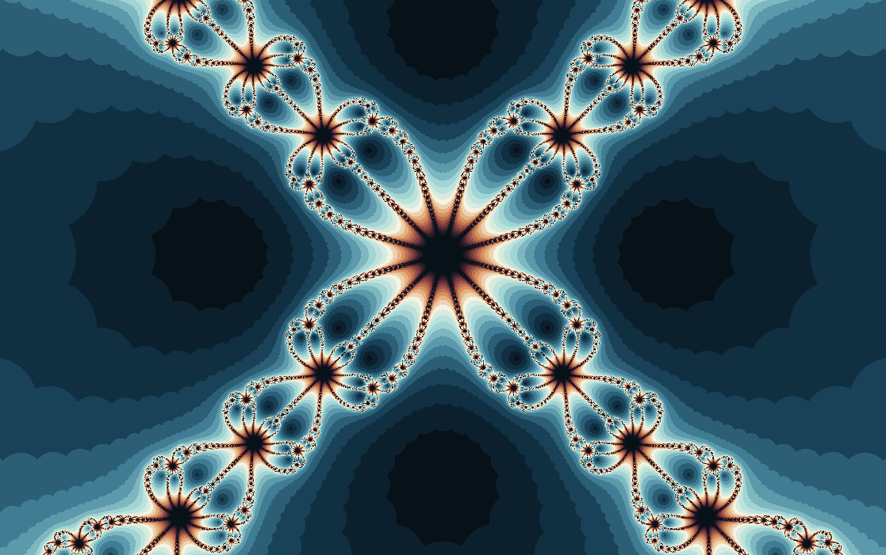

Fractal gallery
Newton \(z^4-1=0\)
Four roots, four destinations, and a fractal border between them.
This map turns Newton's method into a four-directional compass. Each pixel is a starting guess for \(z^4=1\); the color records how quickly the guess settles and which region of the complex plane it approaches.

What to try first
Use Min step in Fractal options to control when two successive Newton estimates count as converged.
Look for the places where four colored basins nearly touch. Those are the sensitive points where a tiny change in the starting guess can choose another root.
Increase the iteration count and watch boundary regions sharpen rather than simply fill in.
Compare it with the \(f(z)=z^3-1\) Newton fractal and the user-defined Newton room.
Turn on the orbit display to see where each point converges
Mathematical notes
The Newton step
For \(f(z)=z^4-1\), Newton's method uses \(z_{n+1}=z_n-(z_n^4-1)/(4z_n^3)\). The roots are \(1\), \(-1\), \(i\), and \(-i\). The render stops when consecutive iterates are within a small tolerance.